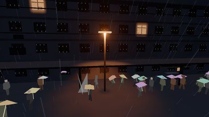
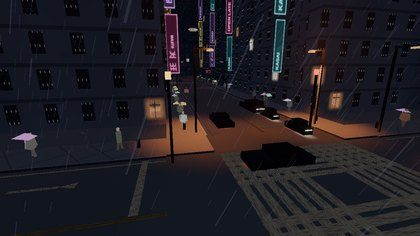
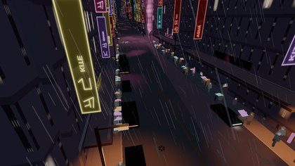
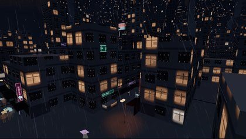
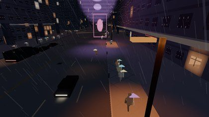
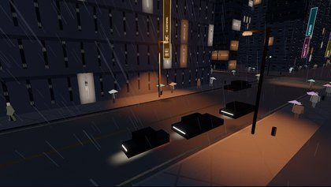
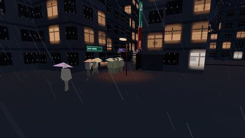
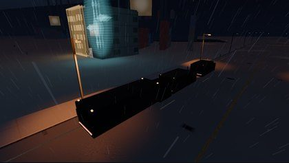

Overall 6 / 10. The night is dark, and a sodium lamp paints a pool that dies before the next pole. That is the Blade Runner 2049 street. The color of a tube still dies on the tube: the air stays grey, and the wet lane does not carry it.
The same text, without the stills, is in lighting-l1-2026-10-12.md. Game code was not edited.
The contact sheet's own green 7s and 8s are a defect check. Every row says "ok". Those numbers are not the scores below.
Scores
| Check | Score | Read |
|---|---|---|
| Practical registry, one exposure | 8 | Candela, nits, AgX, a guard, eight slots with half kept for contact lamps. Harbor, the sea wall, weather, and vehicles are still outside it. |
| Sodium pools | 7 | K's street, South LA, the coast, and the avenue show one orange ellipse and a dark gap. The disc color is a constant, and it ignores lamp height. |
| Neon bleed | 4 | A full glyph sits just over a 32-nit bloom threshold, and bloom strength is 0.04. Neon and holograms are excluded from haze. The lane under a pink tube stays dark. |
| Wet roads after the #64 polish | 5 | The unforced lane is black asphalt plus the pool. The forced mirror is now broken ribbons on a blurrier copy. Those ribbons are still pulled toward steel. |
| Day, night, haze | 6 | Clear noon is steel, smog and dusk stay orange, day signs drop to 0.14. Canyon rain stays grey because haze in-scatter is sodium only. Day was not re-shot. |
| Harbor readiness | 5 | The quay still is already a sodium port in fog. harborMast() is never called. The crane sprites are a white-hot add. Wiring the preset as it stands would stamp a ground disc under a mast the range barely reaches. |
How this was looked at
Stills are the ultra "after" column of docs/lighting/compare.png, shot by scripts/l1-capture.mjs during L1. Night rain, time 22.5, frozen, UI hidden, desktop, WebGL2 on SwiftShader. The planar mirror stays off on that path. The crops below are the same pixels.

#64 merged after that sheet. The wet-streak and short-pool behavior was read in src/lighting/shade.ts, src/roads/material.ts, and src/atmosphere/WetReflector.ts. It was not re-shot. A later capture belongs on an OUT directory outside tests/visual. S3 owns the baselines.
The full sheet is the before/after pair. The "before" column is a pale market floor, a purple DTLA canyon, and a magenta Hollywood street. The frames on this page are only the after column.
What works
Keep these. A later pass that lifts the night sky, paints the lane magenta, or adds bloom on medium will move the picture away from the film.
- One camera. Night is f/2, 1/48 s, ISO 1000 (about EV 4.26, exposure about 0.044). Day is f/5.6, 1/125 s, ISO 100. Districts change which practicals are in the slots. They do not get their own exposure.
- Darkness. K's slab with one lamp and a crowd of umbrellas is the residential frame to protect. South LA, the coast, civic plaza, and the avenue are the same idea: one pool, then black.
- Sodium as a cutoff lantern. 2000 K, 7 500 cd, 48° cone, about 8 m of pool from a 7 m head, so a 32 m spacing goes dark between poles. The 589 nm line is available and is not the street default. The head shell is 16 nits of amber, under the bloom threshold, so the head stays orange.
- The registry.
retainChunkandsetEphemeralrun throughcheckPunctual. Bands reject bad candela, nits, kelvin, and range.npm run lighting:checkis part of the build. Half of each depth slice stays with contact lights, so a close sign cannot take every slot. - Day signs dim.
signPoweris 0.14 at noon and windows followwindowLitdown to 0.12. Clear-day sky is steel(0.22, 0.31, 0.42). Orange remains on dusk and on the smog weather. Night sky and fog are held to 0.42 of the exposure lift. Rain in these stills is still a visible stroke. - Neon weight is local.
neonWetis high on Little Tokyo (0.42), the historic core (0.36), and Hollywood (0.40). Harbor, the coast, the basin, Wallace, and the industrial belts sit at 0.02.


What fails
Neon does not travel
A full glyph is about 1.65 times the 20-nit face, near 34 nits. Bloom starts at 32 nits. On the AgX path the bloom strength is 0.04, so the halo added beside that face is a nit of excess times 0.04. In the canyon stills the tubes are sharp rectangles. Rain in front of them stays grey.
neon-sign and hologram are volumetric: false because a haze slot at sign candela painted a sourceless shaft down the lane. That shaft had to go. The air next to the tube went with it. A sign that wins a shade slot still fails to color the asphalt: a large blade at the 2 200 cd cap, 12 m away, leaves about a tenth of a nit on 0.045 asphalt. The 2-nit ground card (NITS.neonReflection) times the night exposure is a trace.
Hollywood keeps a faint tint on the lane (sheen 0, neonWet 0.40). That tint is noise in the road shader, not the tube above the camera. DTLA's after frame still carries a purple disc under the overhead panel. The canyon around the disc is dark, which is the gain. The disc itself is a card.
Medium and low do not bloom. The phone picture has to come from the faces and one pool. The bloom chain stays off medium. That target is already the one the memory rules refuse to grow.



The wet lane is black in the right way
On this sheet the mirror is off. Broadway, the wet-street shot, and the harbor quay show dark pavement, an orange pool, and sign color stuck on the signs. The gap after the pool is the film's gap.
#64, after these stills, did two things:
- The full-sheet grazing fresnel, which lifted a wet lane toward a pale floor, is broken into streaks.
lanternPoolpaints an explicit disc:exp(-0.11 × horizontal²)times 14 nits. At 3 m that is about 5 nits. At 6 m it is under a third of a nit. The ellipse on current main is shorter than the broad orange foreground in the wet-street still. - The forced mirror dropped from a 0.32-scale plane at 38% opacity to a 0.18-scale plane shown only inside view-aligned ribbons. Gaps stay the road. The night multiply is still toward
(0.55, 0.64, 0.78), so a pink sign inside a ribbon is pulled toward steel. The ribbon mask answers the old complaint that the forced mirror was a sharp picture of the wall. The steel tint spends that answer.
Puddle glow on the road mesh is an authored magenta/cyan or sodium mix, times neonWet, and only inside puddle cells. On Broadway that product is about a nit at full fresnel. A blade sign will not read in it.

src/vehicles/, which K1 has open.
The pool is one orange, at any height
lanternPool uses (1, 0.45, 0.12) for every contact practical. A 4000 K street LED and a future harbor mast paint the same disc. The falloff uses horizontal distance only. A practical 25 m up stamps the same 14-nit disc as a head at 7 m, as long as it occupies a contact slot.
Harbor readiness
The quay on the sheet is already a port: rain, a sodium pool, a dark hull, a cool block in the fog. neonWet is 0.02 and streetFog is 0.46. Leave the weight there. A neon pass on this ground is a mast and a few discharges at the control door, not a canyon.

harborMast() returns a 2000 K practical, 4 200 cd, 58° cone, range 34 m, contact and volumetric, 60-nit shell. Nothing calls it. The live lights are one additive billboard in src/districts/harbor/lights.ts: white-hot core (1, 0.96, 0.86), amber body, gain 1.35, and 28% of that sprite survives at noon. Three sprites per berth:
| Point | Height above ground | At a 34 m range |
|---|---|---|
| Mast | 25 m | The range includes the ground. The cone is wide. Photometric lux on the quay is a few lux. lanternPool would still paint a full disc, because it ignores height. |
| Boom tip | 72 m | The range ends in the air. The sprite is the whole light. |
| House | 81 m | Same as the boom. Sprite only. |
The ocean stays matte (roughness 0.78, envMapIntensity 0). The wet reflector is a 64 m quad under the camera, not clipped to the quay. Beside a slip it can lay streaks onto the basin. The switch is in App.ts, which the open drafts already edit, so that clip waits.
Clear noon, dusk, and smog were not re-shot for this note. In the uniforms, clear day is the steel sky above, dusk and the smog weather stay orange, and day signs sit at 0.14 of the night face. Haze in-scatter runs on four slots, one of them held for a contact lantern, and neon is not a source. That is why canyon rain in these stills is a grey stroke. Residential rain being grey is the right read. Broadway rain being grey is the miss in the neon score.
Refinement passes
Small, and off the files the open drafts already own: K1 (smoke, App.ts, vehicle traffic), B1 (towers, cityMaterial.ts), G1 (LAPD, City Hall, Wallace), H1 (people), and S3 (Atmosphere.ts, Precipitation.ts, Weather.ts, tests/visual).
-
Short neon air, and a halo that clears the face.
src/lighting/runtime.ts,src/lighting/presets.ts,src/lighting/shade.ts. Keep the bloom threshold at 32 nits so an 18-nit window and a 16-nit lamp head stay clean. Raise the AgX bloom strength from 0.04 to about 0.22. Leave medium and low unbloomed. Leaveneon-sign.volumetricfalse at the current range. Add a haze-only reach of about 7 m and a haze candela cap around 80, used only bypracticalInscatter. Keep one of the four haze slots for a contact lantern. LeaveNITS.neonReflectionat 2. A brighter ground card is a carpet. -
Pool color, and height.
lanternPoolinsrc/lighting/shade.ts. Multiply by the slot rgb, so a 2000 K lantern stays the orange in the K still and a 4000 K head does not wear it. Include vertical distance. A practical whose range misses the ground paints nothing. A mast at 25 m paints a dim pool. Street heads near 7 m stay at today's few metres. -
Wet ribbons keep the sign's hue.
src/atmosphere/WetReflector.tsandsrc/roads/material.ts. On the night mirror, darken with a scalar around 0.5 and drop the mix toward steel. KeepresolutionScale0.18 and the streak mask. Wheresheenis 0, tint the puddle term from the nearest non-contact shade slot. An empty slot stays black. Do not raiseneonWet. -
Harbor, after the pool learns height.
Its own change, in
src/districts/harbor/lights.tsand the berth list insites.ts. Not this critique. RegisterharborMast()at the mast only. Leave the boom tip and the house as sprites. Retint the sprite body to the 2000 K chromaticity, drop the white-hot core, and put the quad on the 60-nit shell times the night factor. LeaveneonWetat 0.02 and leave the ocean matte. Clipping the 64 m reflector off the slips waits untilApp.tsis free.
Spinner headlights are the same kind of waiting preset: 28 000 cd, a 16° cone, 90 m, volumetric. The chase frame wants that beam on the wet lane. The call site is src/vehicles/, and K1 has those traffic files open, so it is not one of the passes above.
Leave closed
- No second exposure, no brighter night hemisphere, no cluster texture, no per-light shadow map.
- No bloom targets on medium. No MSAA half-float scene color.
- No magenta sheet on Hollywood, the megatower apron, or the harbor quay.
- No edit to smoke, tower families, the LAPD, City Hall, or Wallace meshes, pedestrians, or
tests/visual.